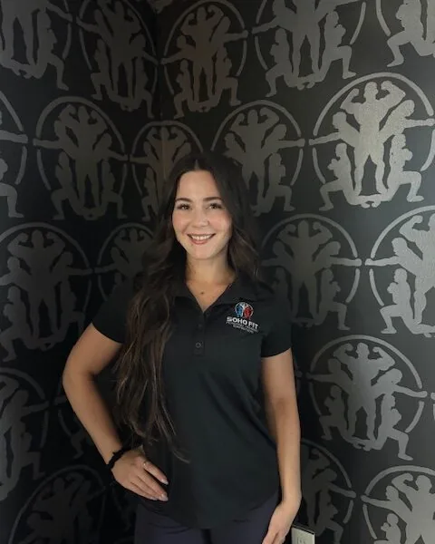

ChavelyCastro-Amores
Eight years coaching women through strength, postpartum recovery and corrective exercise.
How long have you been in fitness and can you describe your journey?
I’ve been training professionally for 8 years, but I fell in love with fitness around age 18. My biggest motivation at the start was wanting to look and feel my absolute best so I could reach my full potential in every area of life. Over time, I realized the gym was giving me so much more than physical changes — it built my confidence, resilience, discipline, and mental strength.
That transformation sparked a passion in me to help other women experience the same thing. Since then, I’ve worked with hundreds of women across multiple states, helping them achieve their fitness goals while also giving them the tools to sustain a healthy lifestyle long-term.
My specialties include Strength Training, Weight Loss, Nutrition, Ante- and Post-Natal Fitness, Glute Development (Glute Specialist Certified), and Corrective Exercise. I’ve also helped many clients return to pain-free movement after injuries, which is one of the most rewarding parts of what I do.
What made you want to get into fitness coaching?
I truly fell in love with how fitness transformed both my physical and mental health. The gym became a constant in my life — a place where I could challenge myself, clear my mind, and build confidence. Very early on, I knew I wanted to help others experience that same empowerment.
I’m especially passionate about supporting women of all ages who may feel intimidated by the gym or by lifting weights. Nothing makes me happier than watching someone go from unsure or nervous to confident, strong, and proud of what their body can do. Helping women realize they are capable of more than they thought is what keeps me motivated every day.
What advice would you give for a new client exploring personal training to get started in their fitness journey or to enhance their current routine?
Start where you are, not where you think you “should” be. Consistency will always beat perfection. Focus on building strong fundamentals, learning proper form, and creating habits you can realistically maintain.
It’s also important to find a program — and a coach — that meets you as an individual. Your lifestyle, stress levels, schedule, and goals all matter. Fitness shouldn’t feel like punishment; it should feel like something that enhances your life.
Most importantly, be patient with yourself. Real, sustainable progress takes time, but the confidence and strength you build along the way are worth it.
What is a success highlight in your fitness career that you’re particularly proud of?
One of the things I’m most proud of isn’t just physical transformations, but the internal ones. Seeing clients go from doubting themselves to walking into the gym confidently, lifting weights they never thought possible, or finally feeling comfortable in their own skin is incredibly rewarding.
I’ve also had the privilege of helping women through major life phases — postpartum recovery, injury rehabilitation, and significant weight-loss journeys. Watching them regain strength, energy, and trust in their bodies is something I never take for granted.
What are some things you like to do in your spare time?
Outside of training, I love anything that helps me recharge and stay balanced. I enjoy staying active, trying new workouts, spending time outdoors, and connecting with friends and family. I’m also big on personal growth, whether that’s learning something new, working on mindset, or simply taking time to rest and reset.
What are some special skill sets and things that your clients should know about you?
My approach is very personalized — I don’t believe in one-size-fits-all programs. I take the time to understand each client’s body, goals, limitations, and lifestyle so we can create something sustainable and effective.
Because of my background in corrective exercise and working with injuries, I’m especially attentive to form, mobility, and pain-free movement. Clients can expect to be challenged, but always in a way that feels safe and supportive.
Most importantly, I strive to create an environment where clients feel encouraged, not judged. My goal isn’t just to help you reach a goal temporarily — it’s to give you the knowledge, confidence, and habits to maintain results for life.
Cole Ringquist →